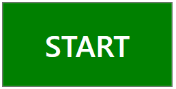
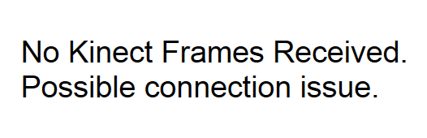
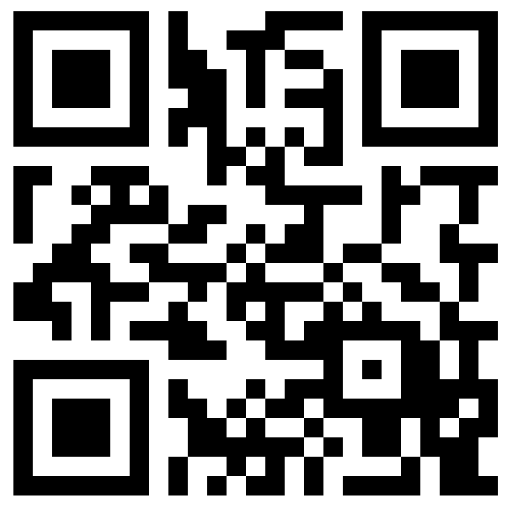
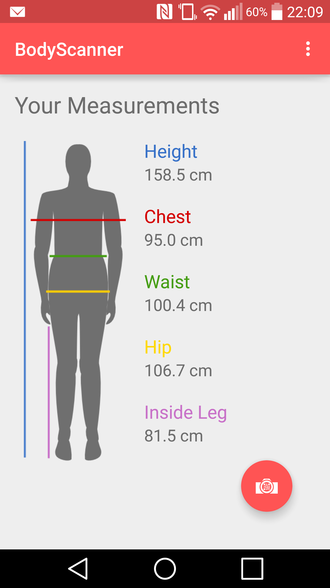

Begin by pressing the "Start" button, as below, and selecting your gender. The system will attempt to open a connection to the Kinect Sensor, displaying feedback regarding pose and scan distance.
Note: if the app fails to receive data frames, you will be asked to ensure that the sensor is connected and working properly.
After moving closer/further away until you are approx. 2 metres from the sensor, you will be asked to adopt a default standing pose with arms down, relaxed by your sides. Once done, the system will provide a three second countdown before scanning.
The system stores your body scan as a point cloud, detailing (X,Y,Z) coordinates for each point scanned. It then passes this to the server for processing. While this is happening, you will be presented with a QR code to scan using our android companion app. It will pair your device with your measurements, delivering them to you once they are ready.
The app will occasionally check-in with the server to see when things are done. When they are, you'll be notified that your measurements are ready and you can view them in the app. They are only stored on your device, keeping things private and letting you check them whenever suits you!
